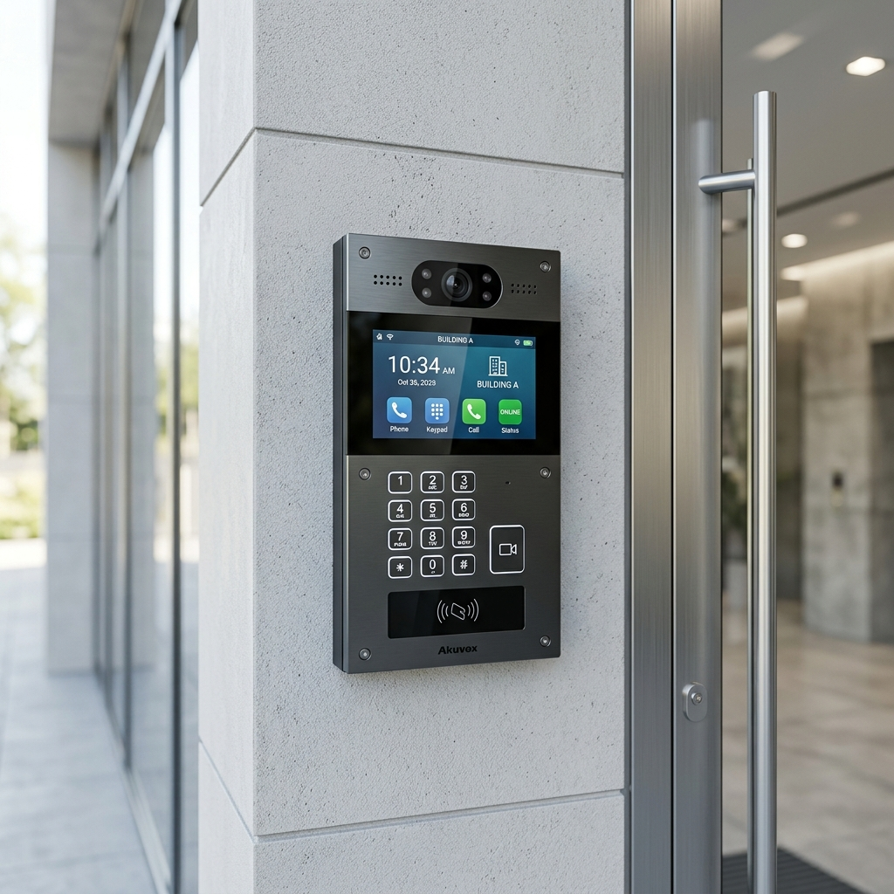

1. Why condo intercoms get neglected for so long
Intercom systems in Singapore condominiums have a long service life. A system installed in the 1990s or early 2000s may still be partially functioning in 2025. Residents have learned to work around the units that no longer function. Guard staff have developed informal workarounds. And because the system still mostly works — some of the time — the MCST defers the capital expenditure year after year.
This is understandable. A full intercom replacement in a condominium of 200 to 500 units is a significant spend. But deferral has its own costs: rising maintenance bills, parts that are no longer available, resident complaints that accumulate into AGM motions, and security gaps when the system fails completely at a critical moment.
The question is not whether to upgrade. In most estates with systems over 12 to 15 years old, the answer to that question is already yes. The question is how to do it in a way that delivers genuine improvement without unnecessary disruption or cost.
2. Signs your system has reached end of life
Parts are no longer available. Once a manufacturer has discontinued a product line, spare parts come from diminishing stock. When those run out, a single faulty unit cannot be repaired — it becomes an inoperable intercom point that either gets taped over or ignored. If your maintenance contractor is already telling you certain components are difficult to source, you are approaching this point.
More than 10% of units are non-functional. In a 300-unit condominium, 30 non-functioning intercom handsets is not a maintenance issue — it is a system failure. Security is compromised because residents cannot vet visitors, and the cost of individually repairing each unit typically exceeds the cost of a phased replacement.
Resident complaints are escalating. Intercom complaints that appear repeatedly in MCST correspondence, management committee meetings, or AGM minutes are a reliable indicator that the system has degraded below acceptable threshold. One or two complaints a year is normal. Monthly complaints about different failures are a pattern.
The system is analogue with no mobile integration. Modern residents expect to be able to receive visitor calls on their mobile phone. A system that requires the resident to be physically present at a handset to vet a visitor is not meeting 2025 expectations and will generate ongoing friction regardless of how well it functions technically.
If your maintenance contractor is advising you to replace rather than repair, take that seriously. They have a financial incentive to keep the existing system running — when they recommend replacement, it usually means the system is genuinely past the point of cost-effective repair.
3. What a modern IP intercom system actually delivers
The difference between a 2005 analogue intercom and a 2025 IP intercom is not merely cosmetic. The underlying architecture is completely different and the operational capabilities are substantially expanded.
Mobile integration
With an IP intercom system like the Akuvox R29, the visitor call goes to the resident's smartphone app wherever they are — in Singapore or overseas. The resident can see the visitor via the door camera, speak to them, and grant or deny access from their phone. No handset required in the apartment unit. This alone resolves the majority of resident complaints about missed visitors.
No re-cabling of individual units
This is the practical advantage that makes IP intercoms viable for Singapore condominiums. The Akuvox R29 connects to the internet via Cat6 cable at the Visitor Call Panel or via a SIM card. It communicates with resident phones via cloud. The individual apartments do not need new cabling — only the lobby or guardhouse panel needs to be connected to the network. For buildings where running cable to each unit would be prohibitively disruptive, this is the practical solution.
Door access integration
The Visitor Call Panel doubles as an access control point. The R29 supports card access, face recognition, and PIN entry at the same unit. A visitor can be issued a temporary PIN valid for a specific time window — no need for a guard to manually open the gate. Regular access cards for residents work through the same system.

Akuvox R29 — The modern standard for condominium intercom upgrades.
Visitor log. Every entry and every call is time-stamped and logged. For MCSTs dealing with security incidents or disputes about visitor access, a verifiable log is significantly more useful than relying on guard records.
Optional indoor panel. Residents who prefer a dedicated screen can add the Akuvox C313 indoor panel, which connects to their home router via Wi-Fi or network cable. This is purely optional — residents who are comfortable using the mobile app do not need the indoor panel at all.
4. The MCST decision — how to frame it for the AGM
Intercom replacement proposals often fail at the AGM not because residents disagree with the upgrade but because the proposal is framed as a cost rather than an investment. The framing matters.
A stronger framing puts three things in front of residents:
- Current cost trajectory. How much has the estate spent on intercom maintenance in the last three years? What is the contractor's assessment of likely maintenance spend over the next three years if the system is kept running? If that number approaches or exceeds the cost of a replacement, the financial case for continuing to maintain the old system disappears.
- Security implications. How many units currently have non-functioning intercoms? What is the security procedure when a visitor arrives and cannot reach the resident? If the honest answer is "the guard opens the gate anyway," that is a security gap worth naming explicitly.
- Resident experience improvement. Mobile integration and temporary visitor PINs are concrete, tangible improvements that residents understand. The appeal of being able to grant access from their phone while overseas is not abstract — it is something that solves a real problem they have experienced.
The estates that get intercom upgrades approved at AGMs are the ones that present a cost comparison, not just a replacement quote. If you are on a management committee considering this, commission a maintenance cost audit for the last three years before you go to the AGM. That document does more persuasive work than any product brochure.
5. What the upgrade process looks like
For a condominium of 200 to 500 units upgrading to an IP system with no re-cabling:
- Phase 1 — Assessment. Site survey of all existing Visitor Call Panels, guard posts, and access points. Confirmation of network connectivity at each panel location. Inventory of non-functioning units in individual apartments.
- Phase 2 — VCP replacement. Visitor Call Panels at guardhouse, lobby, and secondary access points are replaced with IP units. Network connection confirmed at each point. System tested end-to-end before resident app rollout.
- Phase 3 — Resident onboarding. App credentials issued to all units. A simple one-page instruction sheet distributed to each resident. A support period of two to four weeks where the old system may run in parallel if technically feasible.
- Phase 4 — Optional indoor panels. Residents who want the indoor panel order and install separately. This is not part of the main project scope unless the MCST has decided to include it in the upgrade budget.
Typical project timeline: six to ten weeks from survey to resident onboarding. Most of that time is procurement and scheduling, not installation work.
6. Questions to ask any contractor before you appoint
- Do you have existing installations of this system in Singapore condominiums, and can I visit one?
- Is this an authorised installation — can you show the brand authorisation letter?
- What is the warranty on the hardware and what does it cover?
- How are software updates handled after installation — is there a support contract?
- What happens if the internet connection at the VCP goes down — is there a fallback mode?
- How are residents onboarded — do you provide an instruction document, and in what languages?
On the last point: a significant proportion of residents in many Singapore condominiums are more comfortable in Mandarin, Tamil, or Malay than in English. An installer who provides onboarding materials only in English will generate a wave of support calls and resident complaints in the first month.
BOTTOM LINE: An IP intercom upgrade done properly pays for itself in reduced maintenance costs, reduced guard workload, and reduced MCST friction within three to five years. Once the committee has seen a working installation, the decision usually becomes straightforward.

About the Author
Ler Wee Meng is the Founder and CEO of Securevision. He holds a Bachelor of Engineering (Electrical and Electronic) from the National University of Singapore and a Bachelor of Laws from the University of London. With over 37 years of experience in the security industry, he has personally overseen the design and implementation of security systems for more than 1,000 sites across Singapore, ranging from Good Class Bungalows (GCBs) and large-scale condominiums to industrial complexes and institutional facilities.
He is the principal architect of the Securevision SECURE™ Framework and spearheaded the development of the VESTA integration platform. His direct field experience across thousands of residential units ensures that every system designed by Securevision is practical, maintainable, and built to withstand the unique technical challenges of Singapore's climate and regulatory landscape. His engineering-first approach continues to define the standards for intelligent security integration in Singapore.